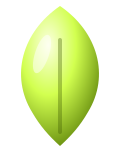

Noite com ilhas de luz
O app vive no grafite. O que pede atenção vira superfície invertida (pílula branca, sheet clara) ou ganha o broto. Nunca dois focos lima na mesma área.

Safra · v1.0A linguagem visual do graao club: grafite profundo, broto neon, números leves, mídia vibrante e micro-interações que respondem a cada gesto. Toda tela nova nasce daqui.
O app vive no grafite. O que pede atenção vira superfície invertida (pílula branca, sheet clara) ou ganha o broto. Nunca dois focos lima na mesma área.
Valores são protagonistas: grandes, leves, tabulares, com unidade pequena e apagada ao lado.
Botões, filtros, badges e linhas selecionadas são pílulas. Cards usam 24–32px. Ícones de ação ficam em círculos com borda fina.
Indicadores deslizam, setas avançam, contadores sobem. Movimento curto, com desaceleração suave, e respeitando "reduzir movimento".
Use sempre os tokens semânticos (--g-surface, --g-accent…). Eles trocam sozinhos entre Noite e Dia.
#C5F82A · --g-accent#D2FF4F · hover#A9DC12 · press#4D6B00 · texto no Dia--g-bg--g-canvas--g-surface--g-surface-raised--g-inverse--g-text--g-text-2--g-line(-strong)--g-safra-lima--g-safra-mar--g-safra-brasa--g-safra-sol--g-safra-uva--g-safra-noite--g-accent-text, que escurece no Dia.Geist para tudo; Geist Mono para rótulos técnicos, códigos e eyebrows. Títulos com tracking negativo, números em peso 300.
.g-displayPlante..g-h1Cultive todo dia.g-h2Colha resultados.g-h3Primeiros passos.g-h4Novas aulas.g-bodyAprenda no seu ritmo com trilhas completas e uma comunidade que troca de verdade..g-eyebrowSeu próximo passo.g-num--xlR$31.211,00.g-num12 diasGrade de 4px. Raio cresce com o tamanho do elemento: controles em pílula, cards 24px, seções 32–44px.
481624406496Saída rápida e pouso suave. Mola só em coisas pequenas que "quicam" (checkbox, avatar, carta que sobe).
--g-ease-outcubic-bezier(.16,1,.3,1)
Padrão para deslizes, indicadores, reveals.
--g-ease-springcubic-bezier(.34,1.56,.64,1)
Quiques curtos: check, toast, card que sobe.
Durações120 · 200 · 320 · 560 · 900ms
Cor 200 · posição 320–560 · números 900+.
Barra fina nos tokens (acende em lima ao arrastar) em toda a página e áreas internas. Rolagem suave com inércia via <html data-g-smooth> — esta página já usa. Repare na linha lima no topo: progresso de leitura.
Área rolável interna
A rolagem com inércia é desligada automaticamente dentro de áreas roláveis, para que elas rolem de forma nativa e previsível.
.g-scroll.g-scroll--x .g-scroll--fadedata-g-smooth no site público e em páginas longas de leitura. Use G.smooth.to(y) para rolar via código.Uma ação principal (lima) por área. Passe o mouse para ver as micro-interações.
.g-btn--accent · --solid · padrão · --quiet--sm 32 · md 40 · --lg 52.g-btn--swap.g-roll.g-btn--shinedata-g-hold="1200"data-g-magnetic · data-g-glow.g-icon-btn.g-field.g-pill-input.g-check.g-switch · data-g-scrubTabela que vira lista no celular, status com texto, gráfico de barras com tooltip.
| Trilha | Status | Inscritos |
|---|---|---|
| Comece Aqui | publicado | 980 |
| Formação IA | beta | 520 |
| Web Start | em revisão | 412 |
| No-code | rascunho | — |
.g-table .g-status .g-barsCard padrão, card dentro de card, sheet clara encaixada com aba recortada, vidro e área tracejada para "adicionar".
Usada para destacar a área de trabalho principal dentro do app escuro.
Cards vibrantes com objeto que "sai" do card e carrossel com foco no centro. Clique nos cards laterais ou use as setas.
G.toast() · G.modal().g-tooltip · .g-skeleton.g-emptyMobile-first: todo componente acima já se adapta ao toque. Estes são os padrões exclusivos do celular. Breakpoints: sm 520 · md 860 · lg 1100 · xl 1360.
.g-appbar .g-tabbar .g-fabNo celular todo modal vira sheet e fecha arrastando para baixo.
G.modal(html, { sheet: true })@media (pointer: coarse)